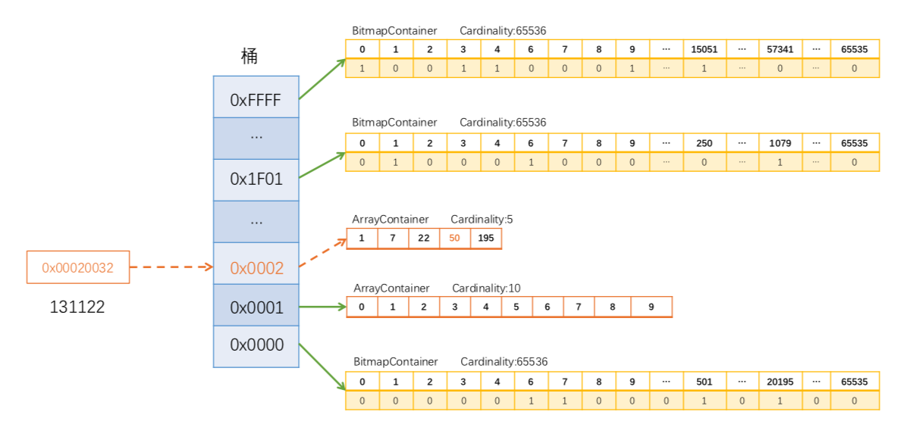
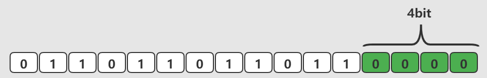
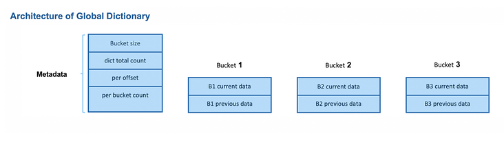
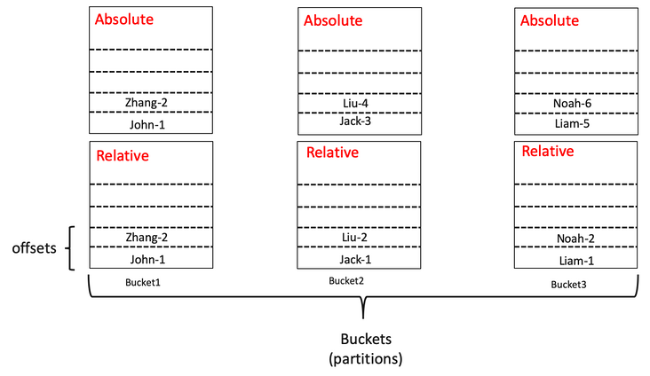
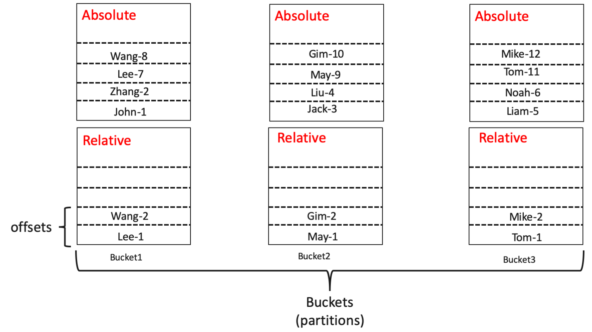

Ch07-Kylin 之 DISTINCT COUNT
July 4, 2021
distinct count
1. 去重算法 #
1.1 介绍 #
Apache Kylin 使用 RoaringBitmap 算法实现了去重功能，RoaringBitmap 算是 bitmap 的一种改进版，能提供更优秀的压缩性能和更快的查询效率。
1.2 算法实现 #
将 32 位无符号整数按照高 16 位分桶，即最多可能有 216=65536 个桶，论文内称为 container。存储数据时，按照数据的高 16 位找到 container（找不到就会新建一个），再将低 16 位放入 container 中。也就是说，一个 RBM 就是很多 container 的集合。

0x00020032（十进制 131122）放入一个 RBM 的过程如上图所示，0x00020032 的前 16 位是 0002，找到对应的桶 0x0002。在桶对应的 Container 中存储低 16 位，因为 Container 元素个数不足 4096，因此是一个 Array Container。低 16 位为 0032（十进制为 50）, 在 Array Container 中二分查找找到相应的位置插入即可（如上图 50 的位置）。
相较于原始的 Bitmap 需要占用 16K (131122/8/1024) 内存来存储这个数，而这种存储实际只占用了 4B（桶中占 2 B，Container 中占 2 B，不考虑数组的初始容量）。
2. 近似 distinct_count #
2.1 介绍 #
Apache Kylin 使用 HyperLogLog 算法实现了近似 Count Distinct，提供了错误率从 9.75% 到 1.22% 几种精度供选择；算法计算后的 Count Distinct 指标，理论上，结果最大只有 64KB，最低的错误率是 1.22%；这种实现方式用在需要快速计算、节省存储空间，并且能接受错误率的 Count Distinct 指标计算。
2.2 算法实现 #
该算法的核心是基于伯努利实验的分析结果进行推测。用网上最常见的例子来说明下
第一次试验：抛掷 1 次出现正面，此时 k=1,n=1;
第二次实验：抛掷 3 次出现正面，此时 k=3,n=2;
第三次实验：抛掷 6 次出现正面，此时 k=6,n=3;
第 n 次试验：抛掷 10 次出现正面，此时 k=10,n=n，通过估算关系计算，n=2^10
上述的公式也可以理解为为了得到得到 k 次正面，一共进行了 2^k 次实验，此时可以简单认为 2^k 就是估计出来的 distinct_count 值。在 HyperLogLog 算法中，将所有的数字放入到 BitMap 中（完成了去重），然后从后向前取值为 0 的数字个数，然后该个数就是上述公式中的 k。

如上图所示，估算出来的 distinct_count 值为 2^4=16。此时可以发现正确的 distinct_cout 值应该是 8，偏差有点大。为了解决估值偏差较大的问题，可以采用如下方式结合来缩小误差。
- 增加测试的轮数，取平均值。假设三次伯努利试验为 1 轮测试，我们取出这一轮试验中最大的的 kmax 作为本轮测试的数据，同时我们将测试的轮数定位 100 轮，这样我们在 100 轮实验中，将会得到 100 个 kmax，此时平均数就是 (k_max_1 + … + k_max_m)/m，这里 m 为试验的轮数，此处为 100.
- 增加修正因子，修正因子是一个不固定的值，会根据实际情况来进行值的调整。
3. 精确 distinct_count #
3.1 介绍 #
从 1.5.3 版本开始，Kylin 中实现了基于 bitmap 的精确 Count Distinct 计算方式。当数据类型为 tiny int(byte)、small int(short) 以及 int，会直接将数据值映射到 bitmap 中；当数据类型为 long,string 或者其他，则需要将数据值以字符串形式编码成 dict(字典)，再将字典 ID 映射到 bitmap。指标计算后的结果，并不是计数后的值，而是包含了序列化值的 bitmap，这样才能确保在任意维度上的 Count Distinct 结果是正确的。这种实现方式提供了精确的无错误的 distinct_count 结果，但是需要更多的存储资源，如果数据中的不重复值超过百万，结果所占的存储应该会达到几百 MB。
Kylin v3.0.0 引入了第一版的 Hive global dictionary(KYLIN-3841)。这个功能使用 Hive 的分布式 SQL 引擎来构建全局字典。为了进一步提升性能，kylin v3.1.0 引入了第二版的 Hive global dictionary v2(KYLIN-4342), 这个版本在某些步骤使用 MapReduce 代替 HQL 进行全局字典的构建。
Kylin v4.0.0 又基于 spark 实现了另外一种分布式构建全局字典的方式。
3.2 算法实现 #
可以看到不管是哪个版本 distinct_count 功能都是基于 dict 和 bitmap 实现的，先将 string 的等类型的数据存储到 dict 中形成 <hash(string), offset>，然后将 offset 放入到 bitmap 中完成 distinct，最后遍历 bitmap 中的元素计算出 count。
这里简单说明下 kylin v4.0.0 中 dict 的构建方式。这个 dict 也称为全局字典，即所有 Server 都可见的一个 dict。
3.2.1 全局字典 #
如上所述，全局字典存在的含义就是保存非数据类型的数据与数值之间的映射关系 <key, hash(key)>，这样就可以将非数值类型的数据映射到 bitmap 上面来实现精确去重。
一份字典包括一份 meta 数据文件和多个字典文件，每个字典文件称之为桶 (Bucket)。

第一次构建

relative 表示本次本 Bucket 已有的数据，Absolute 表示将要构建出来的数据。
以 Bucket2#Jack-1 举例，此时已知 Bucket1 中有 2 个元素，那么可以推断出此时 offset 为 2，那么在构建全局字典的时候，将 <Jack,1> 改成 <Jack1, 1 + 2> 便可。其他依次类推。
第二次构建

relative 表示本次本 Bucket 已有的数据，Absolute 表示将要构建出来的数据（但是此时还有上次构建的数据）。
以 Bucket2#May1-1 举例，此时已知第一次构建完成后中有 6 个元素，而本次 Bucket1 有 2 个元素，那么可以推断出此时 offset 为 8，那么在构建全局字典的时候，将 <May,1> 改成 <May, 1 + 8> 便可。其他依次类推。
Note： 官方给出的示意图中具有一定的误导性，这个 offset 并不是后续会放入到 bitmap 中的数值，单纯的只是记录当前 Buckect 中的数据数量。